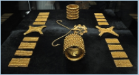
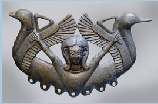

La Penísula Ibérica antes de Roma
Tartessos
Introducción.
Tartessos es el nombre de una antigua civilización que floreció en el sur de la Península Ibérica, en lo que hoy conocemos como Andalucía. Esta civilización, que se desarrolló entre los siglos IX y VI a.C., es conocida por su riqueza en minerales, su avanzada artesanía y su interacción con otras culturas del Mediterráneo, especialmente con los fenicios. A pesar de su importancia, Tartessos sigue siendo un enigma para muchos historiadores y arqueólogos debido a la escasez de fuentes escritas y la naturaleza fragmentaria de los descubrimientos arqueológicos.
Ubicación geográfica y temporal de Tartessos
Tartessos se ubicó principalmente en las actuales provincias de Huelva, Sevilla y Cádiz, en una región rica en ríos y marismas que favorecieron la agricultura y la pesca. Esta ubicación estratégica, junto con la abundancia de recursos minerales como el oro, la plata y el cobre, convirtió a Tartessos en un importante centro comercial en la antigüedad. La civilización tartesia tuvo su apogeo entre los siglos IX y VI a.C., coincidiendo con la presencia fenicia en la Península Ibérica. Sin embargo, hacia el final del siglo VI a.C., Tartessos comenzó a declinar, y su rastro se desvaneció.
Fuentes históricas antiguas que hacen referencia a Tartessos
El geógrafo griego Estrabón, en su obra “Geografía“, menciona la abundancia de plata en Tartessos. Según él, la plata era tan abundante que incluso las anclas de plomo o piedra de los barcos que partían eran reemplazadas por anclas de plata. Esta afirmación, aunque posiblemente exagerada, subraya la riqueza mineral de la región.
Diodorus Siculus, un historiador griego, también hace referencia a Tartessos en sus escritos. Describe cómo los fenicios, al establecer relaciones comerciales con Tartessos, tuvieron que talar extensos bosques en Sierra Morena para obtener suficiente madera. Esta madera era esencial para alimentar los hornos de fundición, que trabajaban día y noche para procesar los ricos minerales de la región.
La Biblia, en particular en el libro de Ezequiel, menciona a Tartessos como un importante comerciante de plata, hierro, estaño y plomo. Esta referencia bíblica no solo destaca la riqueza mineral de la región, sino también la extensa red comercial de Tartessos que se extendía más allá de las fronteras de la Península Ibérica.
A pesar de estas referencias, muchas preguntas sobre Tartessos permanecen sin respuesta. ¿Cómo era realmente la vida en Tartessos? ¿Cómo interactuaron con otras culturas del Mediterráneo? ¿Qué causó su misteriosa desaparición?
Economía y Comercio
Tartessos, ubicada en lo que hoy es el sur de España, fue una civilización que floreció gracias a su estratégica posición geográfica y a la abundancia de recursos minerales en su territorio. Esta región era especialmente rica en minerales como el estaño, el cobre, el oro y la plata. Estos metales no solo eran esenciales para la fabricación de herramientas y objetos cotidianos, sino que también se convirtieron en la base de su economía y en el principal motor de su comercio con otras civilizaciones.
Las minas de Riotinto, en la provincia de Huelva, son un claro ejemplo de la riqueza mineral de Tartessos. Estas minas, que han sido explotadas desde tiempos prehistóricos, proporcionaron a los tartesios grandes cantidades de cobre y otros metales preciosos. La explotación de estos recursos permitió a Tartessos desarrollar una próspera economía basada en la metalurgia, convirtiéndose en uno de los principales centros comerciales de la antigüedad en la Península Ibérica.
Curiosidad
El Carambolo, un santuario fenicio.
Uno de los hallazgos más famosos de esta época es el Tesoro del Carambolo. Fue encontrado por casualidad en 1958 en la localidad sevillana de Camas. Es un excepcional tesoro compuesto por 21 piezas de oro, con un total de casi 3 kilos de peso. Las piezas están ricamente labradas mediante una combinación de técnicas de orfebrería fenicias e indígenas. Se pensó durante muchos años que era un tesoro tartésico. Las últimas investigaciones han demostrado que El Carambolo fue en realidad un santuario fenicio dedicado a la diosa Astarté, una poderosa divinidad fenicia a la que los griegos identificaban con Afrodita. Estaba situado frente a la ciudad de Spal (Sevilla), de la que estaba separado por el Guadalquivir. Fue frecuentado entre los siglos VIII y VI a.C. por fenicios e indígenas.
Las piezas del tesoro posiblemente estaban destinadas a adornar los toros que iban a ser sacrificados en las ceremonias religiosas que tenían lugar en el santuario.
|  |  |
| Tesoro del Carambolo (VIII-VI a.C.) (Réplica en el Museo Arqueológico de Sevilla) Imagen de J.A. Montero Fernández en Wikimedia Commons. Licencia CC BY-SA. |
La diosa Astarté representada en el llamado Bronce Carriazo (s. VII-VI a.C.) (Museo Arqueológico de Sevilla) Imagen de A.M. Felicísimo en Flickr. Licencia CC BY-SA |
Escucha: El Tesoro de El Carambolo
Los tartesios eran conocidos por sus habilidades en la metalurgia, especialmente en el trabajo del oro. Sus artesanos y artesanas lograron un nivel técnico y estético impresionante, como se evidencia en El Tesoro de El Carambolo. En el audio que se adjunta podrás descubrir detalles interesantes sobre este hallazgo.
Obra publicada con Licencia Creative Commons Reconocimiento No comercial Compartir igual 4.0